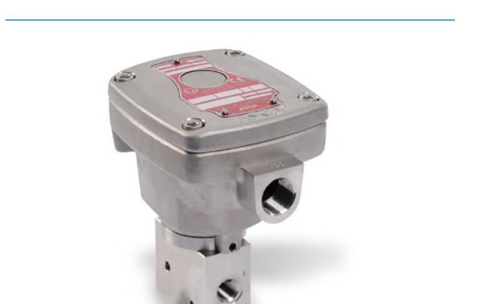
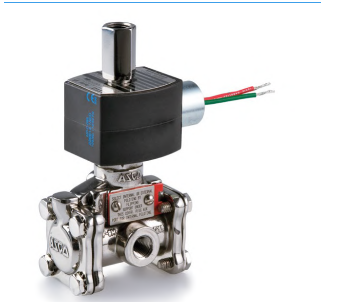

Solenoid Valves: Direct-Acting vs. Pilot-Operated
Direct-Acting

Switches on the solenoid's own electro-magnetic force alone — less flow capacity, no minimum pressure needed
Pilot-Operated

The solenoid pilot switches external air pressure to change the main valve's state — needs a minimum supply pressure, but handles far more flow